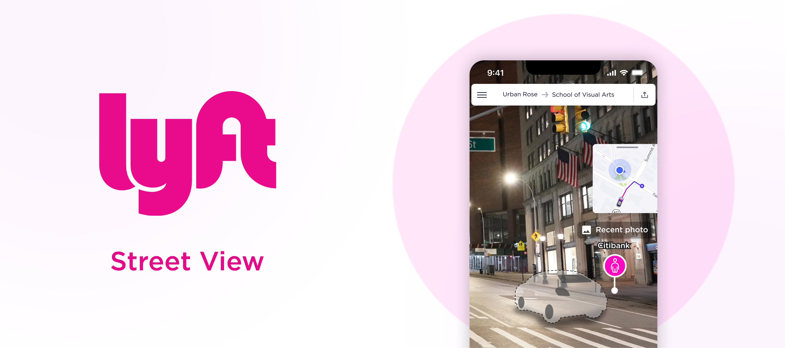
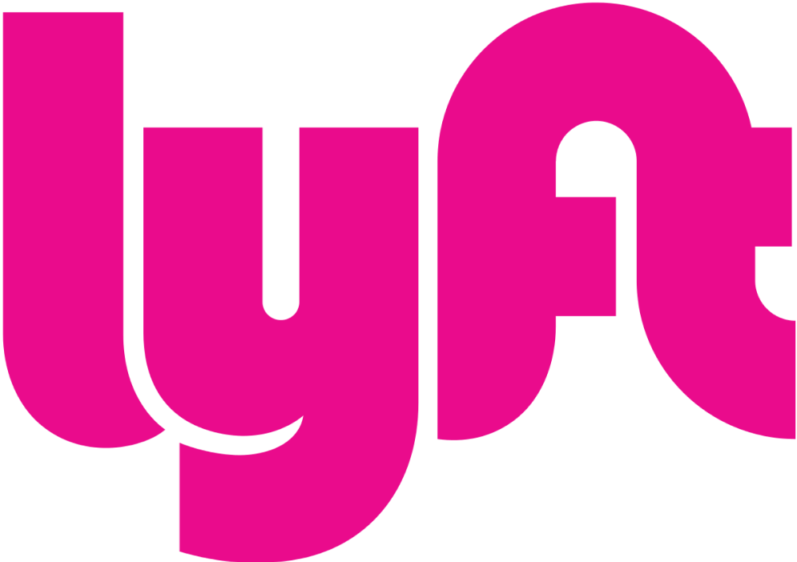
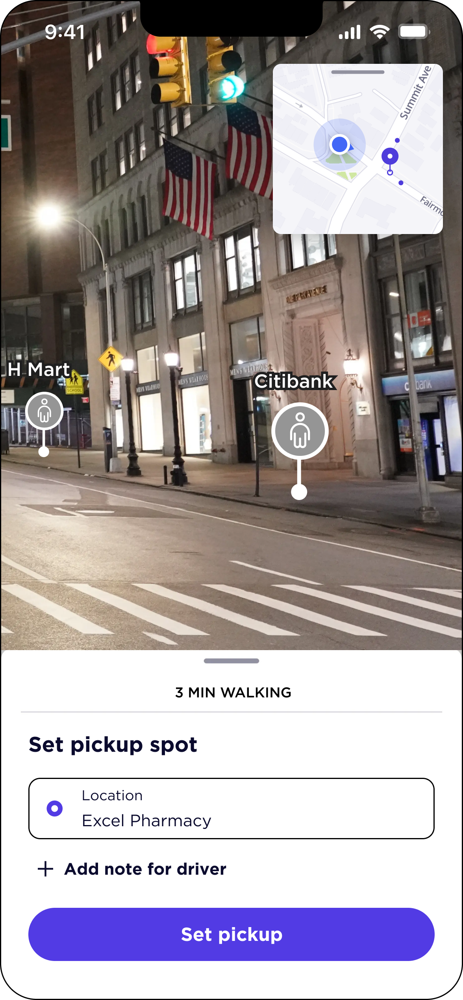
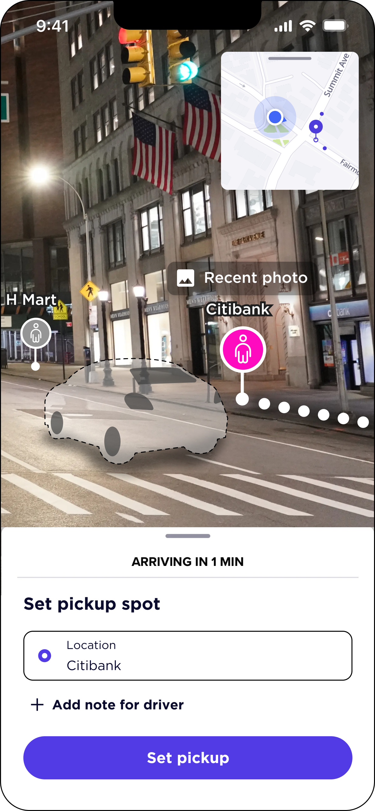
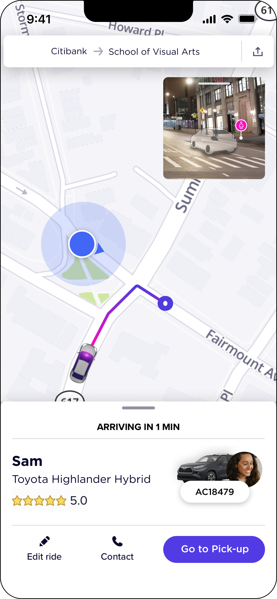
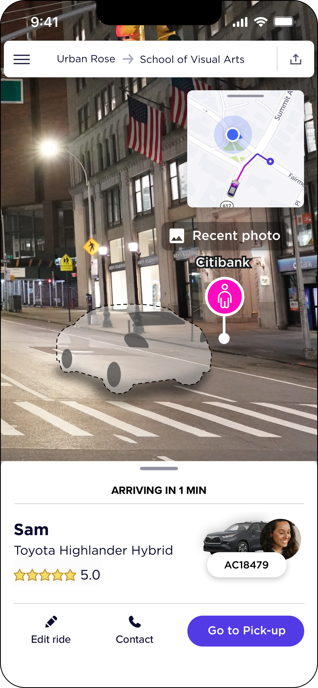
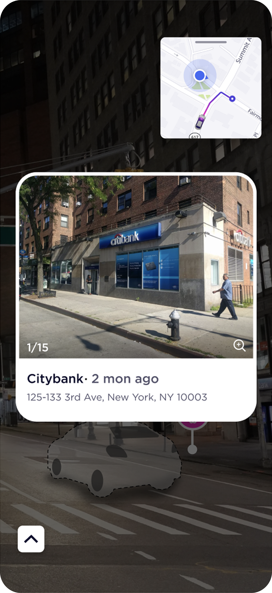

Lyft 街景模式
解决用户在打车过程中难以找到司机和上车点的问题，让打车更简单。
为 Lyft 网约车进行迭代设计，分析当前版本问题，并根据问题和目标人群定制创新解决方案。本项目由我独立完成，是未落地的学生项目。
Brand
品牌 VI 识别
Lyft 的识别体系建立在极简的三色结构上——标志性品牌粉、近黑与纯白，刻意回避渐变。字体使用几何无衬线 Gotham，圆润的字碗与开放的字腔，与圆角化的界面语言同源。本次街景功能严格沿用这套 VI，确保新功能在视觉上仍是「Lyft 的一部分」。
标识 · Identity
x
x

字标为圆润几何小写字形，全小写、紧字距。四周保留不小于 x（字母 l 高度的一半）的安全间距，任何图形与文字不得侵入。
字体 · Typeface
GothamAa
Gg Ry 28
Book
Medium
Bold
Black
色彩 · Colour
三色结构 · 不使用渐变
品牌粉
#E30B88
近黑
#11111F
纯白
#FFFFFF
粉色仅用于关键动作与品牌时刻，黑白承担绝大多数信息层级——避免高饱和色稀释可识别性。
Problem
现有问题分析
乘客在打车时难以准确地找到司机和上车点的位置。在繁忙路口，周边车辆太多难以辨认；在陌生街道，不了解周边环境导致迷失。
Goal
优化乘客找到上车点的路径，并且使用户更了解司机的位置。
解决方案 Solution 03
实景辅助选点
在用户选择或调整上车点时，同步呈现对应位置的近期实景照片，将抽象的地图坐标转化为可辨认的街道环境，帮助用户确认具体入口、道路一侧与周边地标。

Flow
用户使用流程
Screens
页面展示






